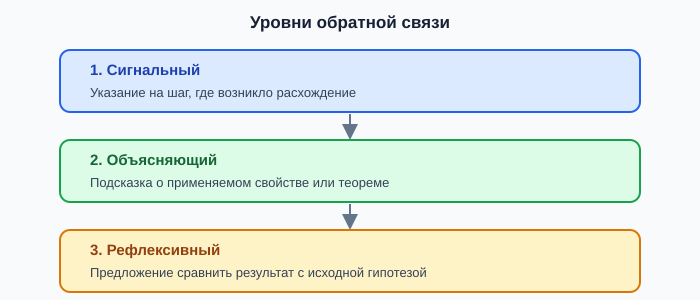

Сигнальный
Указание на шаг, где возникло расхождение.
Четыре типа заданий и три уровня обратной связи: система помогает найти ошибку, но не подменяет рассуждение готовым ответом.
Сопоставить график, формулу и словесное описание зависимости. Проверка — выбором соответствия и кратким пояснением.
Изменить параметры и исследовать их влияние на поведение функции.
Выбрать корректное обоснование перехода от одного выражения к другому.
Сформулировать гипотезу, проверить её в среде и аргументировать вывод.

Указание на шаг, где возникло расхождение.
Подсказка о применяемом свойстве или теореме.
Предложение сравнить результат с исходной гипотезой.
Каждое обращение к подсказке фиксируется в журнале и учитывается преподавателем при формировании индивидуальной траектории.
Функция f(x) = x³ + ax. При a < 0 производная имеет два нуля и функция имеет два экстремума; при a ≥ 0 экстремумов нет. Это правило используется в заданиях на формулировку и проверку гипотезы.